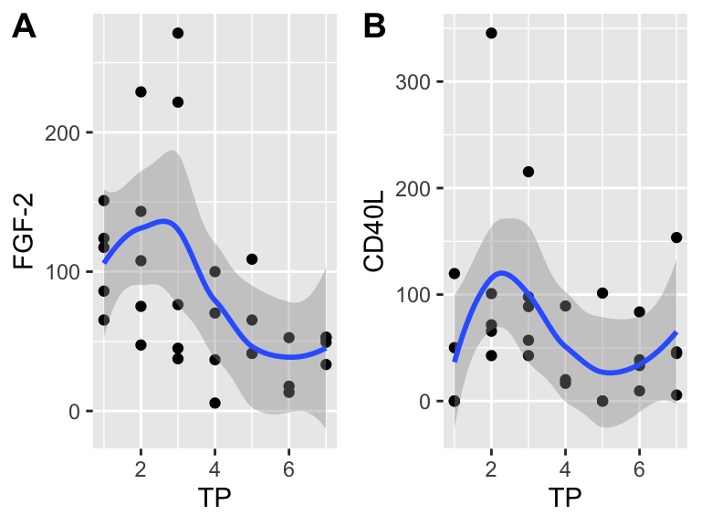
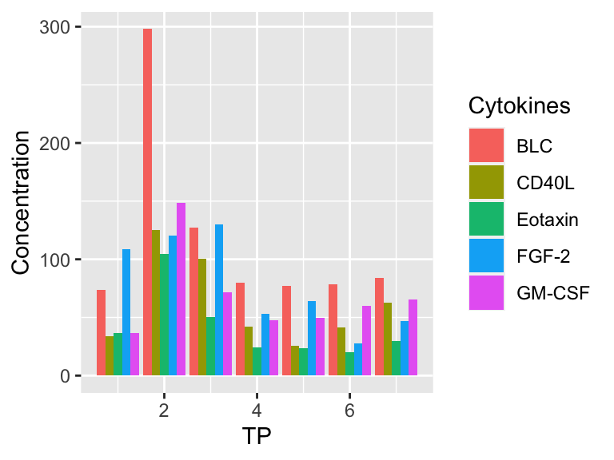

dplyrfilter() from the dplyr packageMost of what we cover today will be based off of Chapter 3, sections 3.7 - 3.9 (plotting) , Chapter 5, sections 5.1 - 5.3 (filter and arrange), as well as Chapter 19 (functions), in the R4DS textbook.
Learn more about the features that the cowplot packages has to offer here. The links under the “articles” dropdown menu are particularly useful, e.g. this article on aligning plots.
This week we will work through the Mean, Median, and Mode module on the website Teacups, Giraffes, and Statistics. Since the statistical concepts shown in this module are likely familiar to you, the most important part of the module will be to Create your own function to calculate the mean. The module also covers how to create a function to calculate the median, but this is a bit more involved from a coding perspective so do not feel discouraged if you find it complicated. If you do want to write a median function, use sort() to order observations and [...] to find the values at specific positions in the vector. Read more about sort() here, and how to use square brackets in R to subset vectors here. The reason why filter() and arrange() can’t be used within the function(s) you will create has to do with the difference between data frames and vectors; something we will talk about more in the future.
Work with the Giraffe_heights.csv data from last week as input, and filter() to only include observations from island 1. In addition, use the $ operator to only include the Height column from this data set, and turning it into a vector, when trying out your brand new function. You might also want to take a look at the Intro to R module when working on the homework.
The exercises for this week are below. I suggest that you create a new R script to work through the answers. You should save your Exercises script in your RStudio Project for this workshop.
You’ll first need to load the appropriate package libraries and read in the data cyto_data_small, though some exercises may require you to work with the pivoted version of this data set.
Recreate the R code necessary to generate the following graphs as output using the cowplot package, and specifically plot_grid().

Create a bar plot showing the median cytokine concentrations for BLC across timepoints.
Recreate the R code necessary to generate the following:

In session 3, we showed you how to add standard error bars to your plot. See if you can add “confidence interval” bars to the plot you constructed above by checking out this link and setting fun.data = to something other than mean_se.
Using the cyto_data_small dataset, which observations of BLC have values greater than 68?
Which observations of BLC have values between 68 and 100, inclusive?
Which observations had non-zero concentrations of Eotaxin and CD40L?
Find all the observations that were from RFa14 or RSb14.
Find all the observations where the BLC value is more than three times the value of Eotaxin.
Which observations had missing values for concentration across any of the cytokines? (Think about whether it is better to use wide or long formatted data to answer this.)
Find the observation with the highest concentration of all cytokines.
How could you use arrange() to sort all missing concentrations to the top of the data set? (Hint: use is.na())
Imagine that you are presented with the ggplot below, which displays all observations from cyto_data_sl. You would like to drop the individual observation that is highlighted and instead create a bar plot which displays the average cytokine concentration at each timepoint. How would you identify this observation, remove it, and create your new plot using the modified data set?
Combine multiple skills that you’ve learned to recreate the plot below: